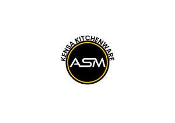

Trade Mark Journal No.2025/013 28 March 2025
UK00004172794 12 March 2025 (8,21)

- Class 8
- Cutlery; Knives being tableware; Disposable tableware [cutlery] made of plastics; Kitchen knives (Non-electric -); Spoons being tableware; Kitchen mandolines; Kitchen knives; Hand-operated cutlery; Cutlery, kitchen knives, and cutting implements for kitchen use; Biodegradable cutlery; Tableware [knives, forks and spoons]; Forks being tableware.
- Class 21
- Tableware, cookware and containers; Cookware; Kitchen utensils; Household or kitchen utensils; Spatulas [kitchen utensils]; Tableware; Tenderizers [kitchen utensils]; Moulds [kitchen utensils]; Kitchen utensils of silicon; Graters [household utensils]; Molds [kitchen utensils]; Dishes [household utensils]; Dishware; Household utensils; Crockery; Graters [non-electric household utensils]; Aluminium moulds [kitchen utensils]; Cookware for use in microwave ovens; Ceramic tableware; Cooking utensils; Cooking utensils, non-electric; Oven-to-table tableware; Cookware and tableware, except forks, knives and spoons; Bone china tableware [other than cutlery]; Baking utensils; Bakeware; Tableware of porcelain; Sieves [household utensils]; Aluminium cookware; Non-electric griddles [cooking utensils]; Griddles [non-electric cooking utensils]; Steamers [cookware]; Griddles [cooking utensils]; Sifters [household utensils]; Mixing spoons [kitchen utensils]; Kitchen graters; Grills [cooking utensils]; Cookware [pots and pans]; Tortilla presses, non-electric [kitchen utensils]; Cosmetic utensils; Coffee services [tableware]; Cooking utensils for use with domestic barbecues; Egg separators [kitchen utensils]; Trivets [table utensils]; Glassware; Wire baskets [cooking utensils]; Glass tableware; Household or kitchen containers; Cutlery trays; Ceramics for kitchen use; Turners (kitchen utensil); Cosmetic and toilet utensils; Cinder sifters [household utensils]; Grills in the nature of cooking utensils; Kitchen utensils, not of precious metal; Saucepans (Earthenware -); Earthenware saucepans; Coasters (tableware); Dinnerware of porcelain; Basting spoons [cooking utensils]; Ovenware; Aluminium bakeware; Crockery made of porcelain; Dinnerware; Laundry balls for use as household utensils; Kitchen grinders, non-electric; Presses (Garlic -) [kitchen utensils]; Garlic presses [kitchen utensils]; Cooking utensils for barbecue use; Bakeware [not toys]; Coffee services in the nature of tableware; Tea services [tableware]; Tableware, other than knives, forks and spoons; Utensils for household purposes; Cooking pots and pans [non-electric]; Non-electric cooking pots and pans.
Adams-social-marketing Ltd